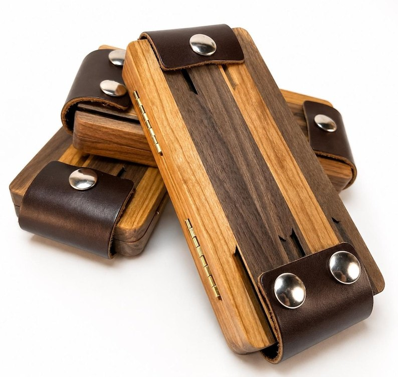
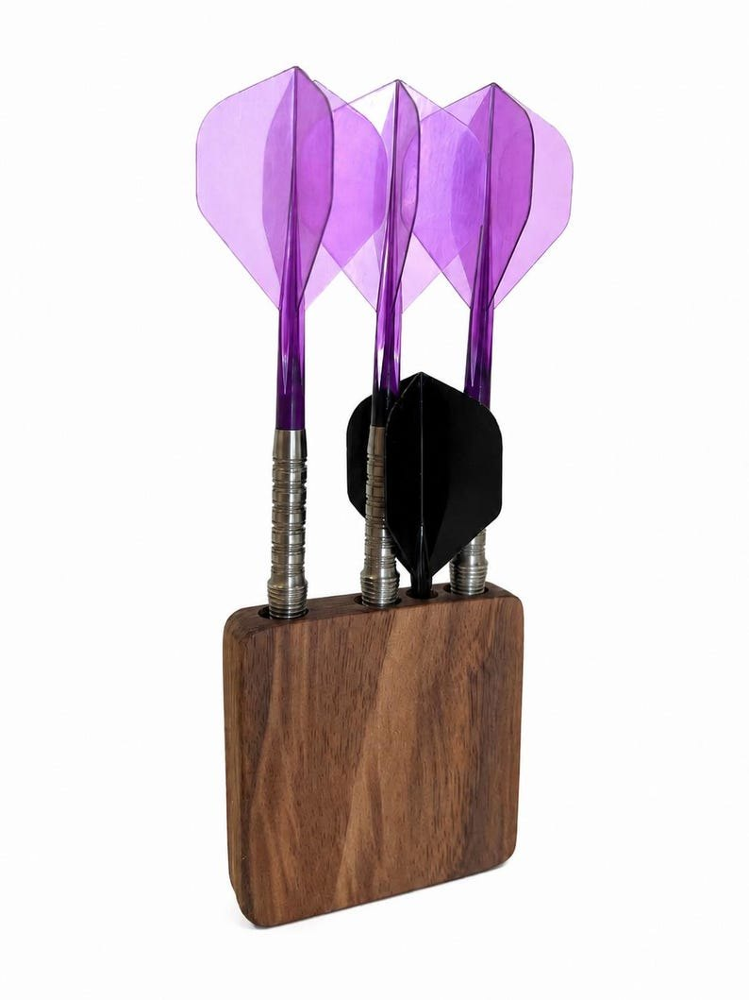
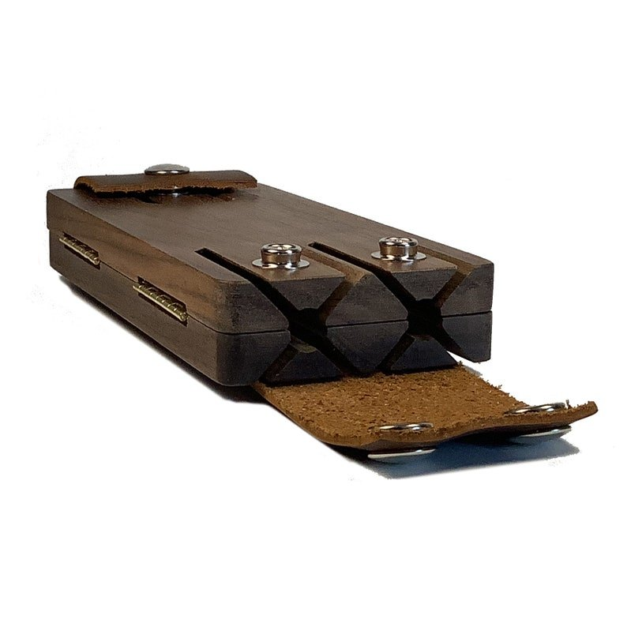

Full-size Dart Case
20 photos & 2 videos ↓Holds your darts with flights attached, plus spare flights, shafts, tips, and tools. See the wood choices, storage, and engraving examples below. Optional engraving is $15.
From $74Shop on Etsy ↗
I’ve been making wood dart cases since 1999. Choose a full-size case for your darts and spare parts, or a mini case for carrying just the essentials. Both can be engraved with your name.
Made by Pat Barnhart · Radford, Virginia

Choose options and place your order on Etsy.
Holds your darts with flights attached, plus spare flights, shafts, tips, and tools. See the wood choices, storage, and engraving examples below. Optional engraving is $15.

Holds three assembled darts and a spare shaft and flight. Approximately 2.5 × 2.5 × 0.5 inches. Optional name engraving is $10.
Darts and accessories in the photos are not included. See Etsy for current prices, wood choices, and shipping.
Scratch-and-dent walnut cases with cosmetic imperfections. See the listing photos for details.

The full-size case has storage for darts and spare parts, magnetic closures, and leather flaps to hold the darts in place.
I made my first batch of dart cases in 1999. I designed them in CAD and had a CNC supplier machine the parts. I still have a case from that first batch, and it’s still going strong.
During the pandemic, I bought a desktop CNC and started machining the cases myself. I’ve made more than a thousand cases over the years, with small changes to the design along the way.
Broken Limb got its name after a ruptured Achilles tendon left me on the couch with time to set up my first online store.
Read the shop story on Etsy ↗Send me a message on Etsy about dart fit, wood choices, or engraving.